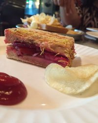

SODA BOTTLE OPENER WALA, Khan Market
One visit was not enough to this place, thus went again as i missed a very delicious dish - Mutton Berry Pulao (how could i??). Ordered sandwich, cookies and pulao. The dishes were presented in a steel plate, quite different but not impressive. However food quality was great!
BOMBAY RASTA MULTIGRAIN SANDWICH
Served with chips and namkeen, and stuffed with fresh veggies, was great in taste. However the namkeen was not really over the sandwich. The multigrain bread was crispy.
NAAN KHATAAI

Taking a bite of it will melt the cookie in your mouth. Perfectly sugar-ed and tasted good.
MUTTON BERRY PULAO

Now what to write about it. This was an amazing pulao i ever had. Had cashewnuts, berries and boneless mutton pieces. Quality of rice was very good and tasted heaven. The pulao when served, may look quite simple, however the moment you take the spoon and dig inside, trust me, you will be lost. A single dish was ample for 2. Highly recommended.
GINGER COOKIES

Bit hard to eat, but the taste of ginger is surely worth. Ginger with a sweet flavor to be precise. Must eat.
CHOCOLATE SHAKE

Shake tasted average. The content of chocolate inside was quite less.
ABOUT
Upon entering you can see kitchen and bar to your left, clean and maintained. The wall contains some strict messages when you enter the cafe after kitchen area - No picking nose, No feet on chair, No talking to cashier and the very last - No Pata Mein Hoon Kaun....lol. If you would want to know the family behind this cafe, go straight after entering. The last wall contains a photo-gallery of all family members, youngest being Mr. Rustom and eldest was George V Mary. The cafe is full of parsi's funny quotes. Stewards were active and joyful. They all were dressed well.
LOCATION
Reaching from metro is easy because of Khan Market metro station (Violet line). Parking is little tough, until you are the back side of the market. Located in foodie bay of Khan Market, is not easily visible because of surrounding hoardings. Go to the last of middle lane heading to Prithiviraj market.